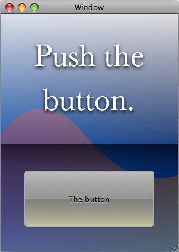
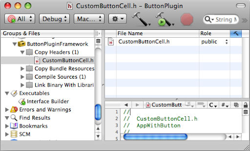
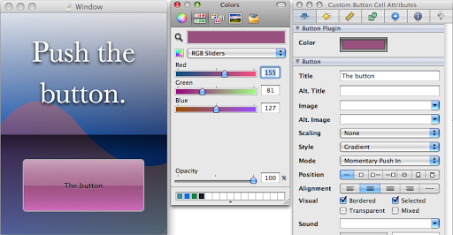

Please note: this article is part of the older "Objective-C era" on Cocoa with Love. I don't keep these articles up-to-date; please be wary of broken code or potentially out-of-date information. Read "A new era for Cocoa with Love" for more.
Custom views in Interface Builder using IBPlugins
If you have custom views configured in code, it can be time consuming to configure them for each instance and make them look right in context. To make the process smoother, you can create Interface Builder plugins and configure your objects in Interface Builder. While the Xcode documentation explains how to do this, it is long, thorough and confusing. Here is the simplified set of steps that I use to create Interface Builder plugins quickly.
Introduction
Apple do have extensive documentation on Interface Builder Plugin creation. However, their documentation is thorough enough that may be overwhelming the first time you want to write an Interface Builder plugin.
I also find the workflow in Apple's IBPluginGuide very different to my typical workflow. I think this is because I normally just want an existing class to show up in Interface Builder so I can tweak one or two attributes — the processes for creating a redistributable library of components is more than I need.
So I was inspired to write this post: a shorter, workflow-optimised version of the same process described in the IBPluginGuide — using Interface Builder to configure a custom button.
A custom buttom
Consider the button in the following window:
A big, drab, gray button. Maybe gray is an acceptable default but it doesn't really match this window. This post will make it easy to adjust this color in Interface Builder.
The large gray button here uses a custom button cell which draws the button using the Gloss Gradient from one of my earlier posts. The drawing code is:
- (void)drawWithFrame:(NSRect)cellFrame inView:(NSView *)controlView
{
NSBezierPath *roundRectPath =
[NSBezierPath
bezierPathWithRoundedRect:NSInsetRect(cellFrame, 2, 2)
xRadius:5
yRadius:5];
NSGraphicsContext *graphicsContext = [NSGraphicsContext currentContext];
[graphicsContext saveGraphicsState];
[roundRectPath addClip];
DrawGlossGradient(
[graphicsContext graphicsPort],
self.buttonColor, // <-- this determines the color of the button
cellFrame);
if ([self isHighlighted])
{
[[NSColor colorWithCalibratedRed:0.0 green:0.15 blue:0.35 alpha:0.5]
set];
[roundRectPath fill];
}
[graphicsContext restoreGraphicsState];
[[NSColor lightGrayColor] set];
[roundRectPath setLineWidth:2.0];
[roundRectPath stroke];
[self drawInteriorWithFrame:cellFrame inView:controlView];
}This is all fine except that the color of the button is determined by the self.buttonColor property and if we have to choose this in code (continually changing the value, fixing, continuing, refreshing and repeating) it could get very time consuming.
A better solution would be to edit the button's color in Interface Builder. That way, we will be able to use color sliders to update the button drawn in the complete context of the window, in real-time.
Creating the IBPlugin project
My process normally starts by creating a custom view component. In this case, I have already created a class named CustomButtonCell in the project for my main application (AppWithButton). After creating the class, I have decided it would be a good idea to have an Interface Builder Plug-In.
A quick point about class requirements: every property we want to configure in Interface Builder must be encoded and decoded for the object using implementations of theNSCoderprotocol methodsinitWithCoder:andencodedWithCoder:overrides. Download the project linked below to see how this is done.
1. Create and name the project
"Interface Builder Plug-In" is a project template in Xcode. In the New Project window, it's in the "Mac OS X -> Standard Apple Plug-ins" section.
An important point to consider is the name for the project — it should not be the same as the custom view component (in this case, CustomButtonCell) because the template will create a class with the name and it can't conflict with the existing view component.
I chose "ButtonPlugin" and saved the new project in the folder for my existing AppWithButton project.
2. Make the new project use the existing CustomButtonCell
Delete the default files and insert our own
The template creates a custom view in the ButtonPlugin project. I never use this (since I want to use my existing view). So I delete the ButtonPluginView.m, ButtonPluginView.h references and files.
I add my CustomButtonCell.m and CustomButtonCell.h files to the ButtonPlugin project but I don't copy or move the files — I leave the files at their current locations in AppWithButton project but drag them into the ButtonPlugin's Source Tree.
Make certain these new files get built
You need to check that the CustomButtonCell.m is added to the Compile Sources build phase of the ButtonPluginFramework Target and the CustomButtonCell.h is added to the Copy Headers build phase of the ButtonPluginFramework. Neither should appear in the ButtonPlugin target.
Then, select the "CustomButtonCell.h" file from the "Copy Headers" build phase and in the Detail View, change the "Role" from "Project" to "Public". This is a pretty obscure thing to do. I normally don't have the Detail View visible — if you don't know which view is the Detail View, it's time to learn because there is no other way to change this value in Xcode.
Change the Role of the "CustomButtonCell.h" to "public" in the Detail View
Rename the file ButtonPluginViewIntegration.m to CustomButtonCellIntegration.m and replace every occurrence of ButtonPluginView in this file to CustomButtonCell.
3. Prepare all the other files in the project
Make the following file changes:
- Find the ButtonPluginView.classdescription and rename this file to CustomButtonCell.classdecription (same as our custom cell).
- In the contents of this file, change the
ClassNameto match the actual class nameCustomButtonCelland change theSuperClassto beNSButtonCell(again, matching the actual super class for our custom button cell). - In ButtonPlugin.m (the top level class in the ButtonPlugin project), set the bundle identifier to something appropriate. I used
com.mattgallagher.ButtonPlugin— this needs to be unique among Interface Builder plugins, so you pick an appropriate value each time. - Set the bundle identifier in the Info.plist and the ButtonPlugin-Info.plist to the same
com.mattgallagher.ButtonPluginvalue.
4. Configure the display of the button cell for the Interface Builder Library panel
Open the ButtonPluginLibrary.nib. This file contains the "Library Object Template" view (an instance of IBLibraryObjectTemplate). You can find it in the "Library Objects" view at the top level.
Delete the library template that doesn't apply
The Library Object Template will contain a "Template" and an "Example" square. The "Template" version is for NSView subclasses but our CustomButtonCell needs to be embedded in another object (an NSButton) so we will use the "Example" square — so delete the "Template" square.
Set our custom class in the library template
If you click on the button in the "Example" square then click again, it will select the NSButtonCell inside the button (these clicks should be slower than a double-click, since a double-click will edit the text of the NSButton instead of selecting the NSButtonCell inside). With the NSButtonCell selected:
- Type Command-6 to select the correct inspector panel.
- Enter the custom class name in the "Class" field of the inspector — in our case, we need this to be
CustomButtonCell. - Set the button cell class for the
NSButtonto the right of the "Example" box in the same way.
Select the Library Object Template (ButtonPluginLibrary.nib window -> Library Objects -> Library Object Template) and:
- Type Command-1 to select the correct inspector panel.
- Fill in the "Label", "Summary" and "Description" for your Library Object as you choose. I like to delete the Path and leave it blank but you can add a path if you want to categorize your custom classes.
5. Configure the Interface Builder Inspector panel
Back in the ButtonPlugin project again, open the ButtonPluginInspector.xib.
Set all the controls in the Inspector panel how we want them
I deleted everything in the "Inspector View" window except 1 label and the NSColorWell. I moved these controls to the top of the view and then made the view 35 pixels high.
Connect the controls so they act on our object
To make the color selector do something, I used bindings. Select the NSColorWell and:
- Type Command-4 to select the correct inspector panel.
- Under the "Value" subheading, bind to File's Owner (make sure the checkbox is selected too).
- Set the Model Key Path to
inspectedObjectsController.selection.buttonColor.
This binding needs one other change to work. Back in the ButtonPlugin project, open the CustomButtonCellIntegration.m file. Change the [[keyPaths objectForKey:IBAttributeKeyPaths... line to:
[[keyPaths objectForKey:IBAttributeKeyPaths]
addObjectsFromArray:[NSArray arrayWithObjects:@"buttonColor", nil]];This tells Interface Builder to track and monitor the buttonColor property on the CustomButtonCell class. It does not actually perform the value changing (the binding we established will change the value directly) but it will make certain that this value will be tracked for undos and can be edited correctly.
Using the IBPlugin
At this point, you can run the ButtonPlugin project and it will launch Interface Builder with the plugin visible. The only problem is that the plugin won't be visible if you launch Interface Builder in any other way.
Build Settings
The following steps will make the ButtonPlugin project build the ButtonPlugin.framework and ButtonPlugin.ibplugin and install it in your Library.
Double click the ButtonPlugin project item in the ButtonPlugin project Source Tree to edit the project settings. Select the "Build" tab, then choose "Configuration: All Configurations". Then make the following changes:
- Set the "Deployment Location" checkbox to checked.
- Set the "Installation Build Products Location" to "$(HOME)/Library/Frameworks".
- Set the "Installation Directory" to "/".
Double-click the "ButtonPlugin" target in the Source Tree to edit that target's settings. Select the "Build" tab, then choose "Configuration: All Configurations". Then make the following change:
- Set the "Installation Directory" to "/ButtonPlugin.framework/Resources.
And now it's installed
With these changes made, build and run the ButtonPlugin project and it will install the ButtonPlugin.framework in your ~/Library/Frameworks directory and load it in Interface Builder. From now until you remove the framework from your library, it will remain in Interface Builder and you can use it at any time.
I realize that this configures the app to install the "Debug" build in the user's library, over the top of the "Release" build (if the Release build is already built) but this is really just for local use, so I don't really care. If you do care, you might not want to apply these settings to all configurations. For me: this is faster to implement and easier to manage.
Integration with the original AppWithButton project
After setting up the Interface Builder plugin, instance of CustomButtonCell in your existing .xib and .nib files will not instantly update. You'll probably need to create new versions of the cell by dragging them out from the Library.
In this example, I have chosen to not link the original AppWithButton project with the ButtonPlugin.framework. This is because I don't want to distribute either the framework or the plugin — they are both for my purposes only.
If you wanted to link them, you could remove the CustomButtonCell.m and CustomButtonCell.h files from the original project and replace them with the ButtonPlugin.framework. According to the Xcode documentation, this arrangement would allow you to avoid installing the ButtonPlugin.framework in your ~/Library/Frameworks directory (Interface Builder would automatically find the plugin for any .nib or .xib file in the project). That's a nice idea but it has never worked for me, so I never bother.
Set a build dependency to keep ButtonPlugin up-to-date
Instead, I like to drag the ButtonPlugin.xcodeproj file into the AppWithButton Source Tree and edit the AppWithButton target, go to the "General" tab and add the ButtonPlugin.xcodeproj as a Direct Dependency.
The reason for this is that if I change the CustomButtonCell class and rebuild, it will automatically rebuild the Interface Builder plugin accordingly (you need to restart Interface Builder to see the changes).
The AppWithButton window in Interface Builder, adjusting the color of the button in real-time.
Conclusion
You can download the complete AppWithButton project zip file (including the ButtonPlugin project) (385kB).
It takes quite a few steps to set up an Interface Builder plugin. Fortunately, they're all simple, if a little menial.
Notice how little code was actually written though: bindings and Objective-C 2.0 properties make this whole process considerably easier — there is no actual code written to set the buttonColor (except in the NSCoder method implementations) since the bindings do it all for us.
Once you're practiced at making plugins in this way, the effort to create one may be justified, even just to tweak simple properties like this.
Do I know how to do this for Cocoa Touch classes for iPhone development? No. I imagine it's possible but you'd need to completely change the IBPlugin project from the template and I've never tried.
Verifying that a string contains an email address using NSPredicate
HashValue: an object for holding MD5 and SHA hashes